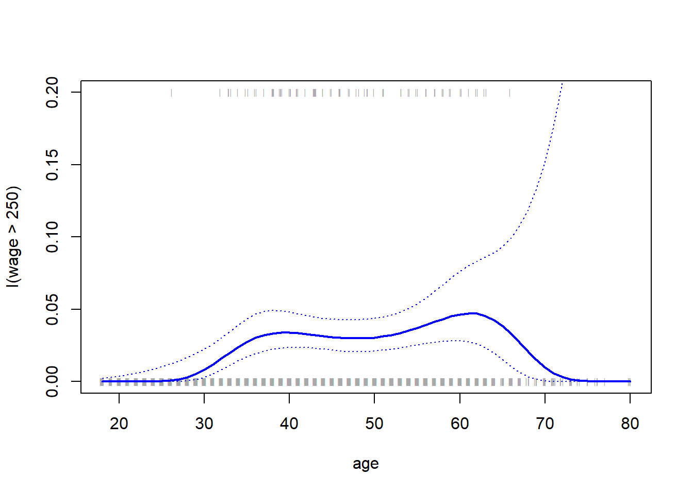
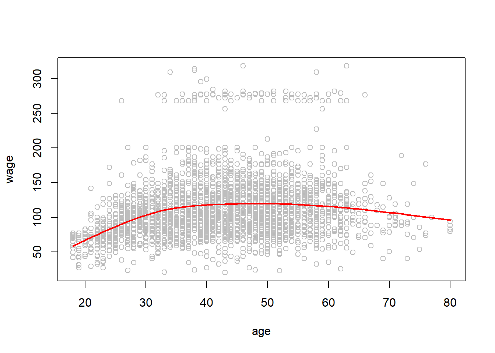
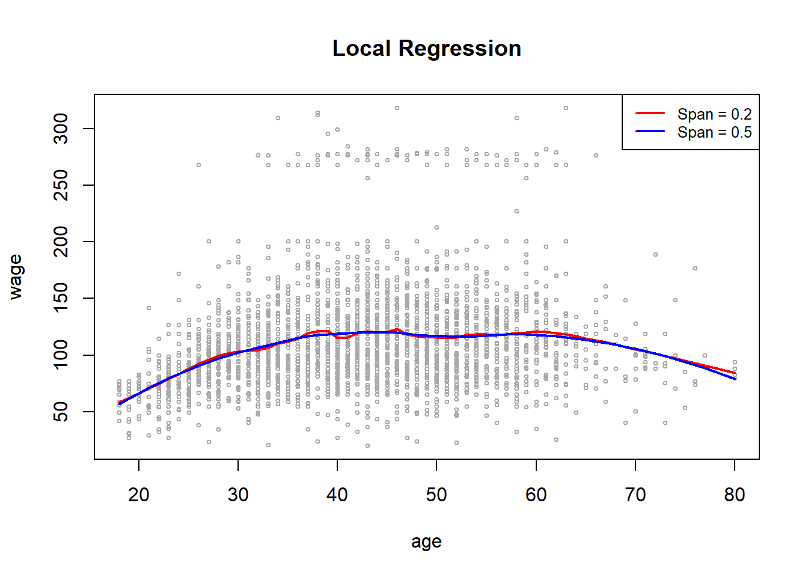
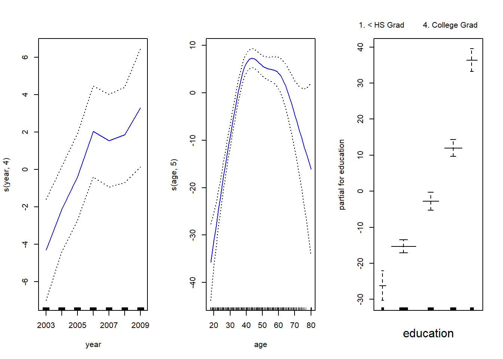
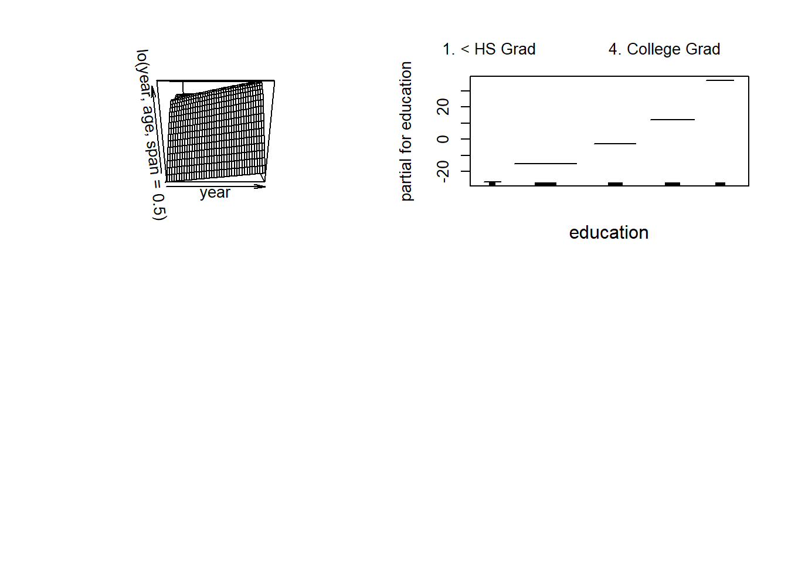

Demonstration 4: Beyond Linearity
For the tasks below, you require the Wage dataset from the ISRL2 package.
You will also need the akima and gam packages; please make sure to install and load it before you begin the practical.
The Wage dataset contains wage and other data for a group of 3000 male workers in the Mid-Atlantic region. It is a data frame with 3,000 observations on 11 variables. To learn more about the variables, type ?Wage in your console.
The goal of this demonstration is to fit models that predict wage to exemplify some of the ways in which non-linearity can be addressed.
Loading the required packages:
Polynomial Regression and Step Functions
Let’s first consider polynomials by fitting a linear model predict wage using age up to the fourth degree polynomial. By using the poly() command, we can avoid having to type a formula with powers of age up to the fourth. The function returns a matrix whose columns are a basis of orthogonal polynomials, which essentially means that each column is a linear combination of the variables age, age^2, age^3 and age^4.
## Estimate Std. Error t value Pr(>|t|)
## (Intercept) 111.70361 0.7287409 153.283015 0.000000e+00
## poly(age, 4)1 447.06785 39.9147851 11.200558 1.484604e-28
## poly(age, 4)2 -478.31581 39.9147851 -11.983424 2.355831e-32
## poly(age, 4)3 125.52169 39.9147851 3.144742 1.678622e-03
## poly(age, 4)4 -77.91118 39.9147851 -1.951938 5.103865e-02Alternatively, we can set the raw argument to TRUE if we want to obtain age, age^2, age^3 and age^4 directly.
## Estimate Std. Error t value Pr(>|t|)
## (Intercept) -1.841542e+02 6.004038e+01 -3.067172 0.0021802539
## poly(age, 4, raw = T)1 2.124552e+01 5.886748e+00 3.609042 0.0003123618
## poly(age, 4, raw = T)2 -5.638593e-01 2.061083e-01 -2.735743 0.0062606446
## poly(age, 4, raw = T)3 6.810688e-03 3.065931e-03 2.221409 0.0263977518
## poly(age, 4, raw = T)4 -3.203830e-05 1.641359e-05 -1.951938 0.0510386498Either approach is acceptable since the choice does not affect the fitted values (although of course it will affect the coefficient estimates).
There are several other equivalent ways of fitting this model such as using the wrapper function I():
## (Intercept) age I(age^2) I(age^3) I(age^4)
## -1.841542e+02 2.124552e+01 -5.638593e-01 6.810688e-03 -3.203830e-05Or cbind() , to build a matrix from a collection of vectors:
We now create a grid of values for age at which we want predictions (all ages in the dataset), and then call the generic predict() function, specifying that we want standard errors as well by setting se = TRUE.
#obtain range of values for the age variable
agelims <- range(age)
#generate sequence of values for age
age.grid <- seq(from = agelims[1], to = agelims[2])
# obtaining predictions with SE
preds <- predict(fit, newdata = list(age = age.grid),
se = TRUE)
# upper and lower bounds
se.bands <- cbind(preds$fit + 2 * preds$se.fit,
preds$fit - 2 * preds$se.fit)Finally, we plot the data and add the fit from the degree-4 polynomial. By plotting the data, we can visualise the model fit together with the associated uncertainty.
#creating the plot
plot(age, wage, xlim = agelims, cex = .5, col = "darkgrey")
#adding a title
title("Degree-4 Polynomial", outer = T)
#adding fitted line
lines(age.grid, preds$fit, lwd = 2, col = "blue")
#adding CIs
matlines(age.grid, se.bands, lwd = 1, col = "blue", lty = 3)
Ok, so how exactly do we decide which polynomial degree is suitable to fit a model that explains the relationship between wage and age?
One way is to use ANOVA (F-test). So for example, we can fit models ranging from linear (1st degree polynomial) to a fifth degree polynomial and use ANOVA to determine the simplest model which is sufficient to explain the relationship between the two variables.
Our null hypothesis is that a model \(M_1\) is sufficient to explain the data against the alternative hypothesis that a more complex model \(M_2\) is required. In order to use the anova() function, remember that \(M_1\) and \(M_2\) must be nested models. In other words, the predictors in \(M_1\) must be a subset of the predictors in \(M_2\).
Therefore, we fit five different sequentially (simplest to most complex)
fit.1 <- lm(wage ~ age, data = Wage)
fit.2 <- lm(wage ~ poly(age, 2), data = Wage)
fit.3 <- lm(wage ~ poly(age, 3), data = Wage)
fit.4 <- lm(wage ~ poly(age, 4), data = Wage)
fit.5 <- lm(wage ~ poly(age, 5), data = Wage)
anova(fit.1, fit.2, fit.3, fit.4, fit.5)## Analysis of Variance Table
##
## Model 1: wage ~ age
## Model 2: wage ~ poly(age, 2)
## Model 3: wage ~ poly(age, 3)
## Model 4: wage ~ poly(age, 4)
## Model 5: wage ~ poly(age, 5)
## Res.Df RSS Df Sum of Sq F Pr(>F)
## 1 2998 5022216
## 2 2997 4793430 1 228786 143.5931 < 2.2e-16 ***
## 3 2996 4777674 1 15756 9.8888 0.001679 **
## 4 2995 4771604 1 6070 3.8098 0.051046 .
## 5 2994 4770322 1 1283 0.8050 0.369682
## ---
## Signif. codes: 0 '***' 0.001 '**' 0.01 '*' 0.05 '.' 0.1 ' ' 1The results show that Model 2 (2nd degree polynomial) and model 3 (3rd degree polynomial) are statistically significant which suggest that a linear model is insufficient. Since the p-values for Models 4 and 5 are large, there is evidence to suggest that higher order models are not justified to explain the relationship between age and wage.
As an alternative to using hypothesis tests and ANOVA, we could choose the polynomial degree using cross-validation.
Now let’s consider a classification problem and predict whether an individual earns more than \(\$250{,}000\) per year or not using a logistic regression model.
We proceed much as before, except that first we create the appropriate response vector, and then apply the glm() function using family = "binomial" in order to fit a polynomial logistic regression model. The expression wage > 250 evaluates to a logical variable containing TRUEs and FALSEs, which glm() coerces to binary by setting the TRUEs to 1 and the FALSEs to 0.
As before, we obtain the predictions using the predict() function and make use of the age.grid object we created earlier. Since we also want the standard errors, we set se to TRUE.
However, calculating the confidence intervals is slightly more complex than in the linear regression case. The default prediction type for a glm() model is type = "link" and so we obtain predictions for the logit: that is, we have fit a model of the form:
\[
\log\left(\frac{\Pr(Y=1|X)}{1-\Pr(Y=1|X)}\right)=X\beta,
\]
and the predictions given are of the form \(X\hat\beta\). The standard errors given are also for \(X \hat\beta\). In order to obtain confidence intervals for \(\Pr(Y=1|X)\), we use the transformation:
\[
\Pr(Y=1|X)=\frac{\exp(X\beta)}{1+\exp(X\beta)}.
\]
pfit <- exp(preds$fit) / (1 + exp(preds$fit))
se.bands.logit <- cbind(preds$fit + 2 * preds$se.fit,
preds$fit - 2 * preds$se.fit)
se.bands <- exp(se.bands.logit) / (1 + exp(se.bands.logit))Note that we could have directly computed the probabilities by selecting the type = "response" option in the predict() function.
However, the corresponding confidence intervals would not have been sensible because we would end up with negative probabilities.
Now let’s create a rug plot. The age values corresponding to the observations with wage values above \(250\) are denoted as gray marks on the top of the plot, and those with wage values below \(250\) are shown as gray marks on the bottom of the plot. We also use the jitter() function to jitter the age values slightly to avoid overplotting.
plot(age, I(wage > 250), xlim = agelims, type = "n",
ylim = c(0, .2))
points(jitter(age), I((wage > 250) / 5), cex = .5, pch = "|", col = "darkgrey")
lines(age.grid, pfit, lwd = 2, col = "blue")
matlines(age.grid, se.bands, lwd = 1, col = "blue", lty = 3)
Step Functions
In order to fit a step function, we use the cut() function.
##
## (17.9,33.5] (33.5,49] (49,64.5] (64.5,80.1]
## 750 1399 779 72Here cut() automatically picked the cutpoints at \(33.5\), \(49\), and \(64.5\) years of age. We could also have specified our own cutpoints directly using the breaks option. The function cut() returns an ordered categorical variable.
Therefore, if we use the function directly within lm() then it creates a set of dummy variables. Since age < 33.5 category is left out, the intercept coefficient of \(\$94{,}160\) can be interpreted as the average salary for those under \(33.5\) years of age, and the other coefficients can be interpreted as the average additional salary for those in the other age groups.
##
## Call:
## lm(formula = wage ~ cut(age, 4), data = Wage)
##
## Coefficients:
## (Intercept) cut(age, 4)(33.5,49] cut(age, 4)(49,64.5]
## 94.158 24.053 23.665
## cut(age, 4)(64.5,80.1]
## 7.641We can also produce predictions and plots just as we did in the case of the polynomial fit.
## Estimate Std. Error t value Pr(>|t|)
## (Intercept) 94.158392 1.476069 63.789970 0.000000e+00
## cut(age, 4)(33.5,49] 24.053491 1.829431 13.148074 1.982315e-38
## cut(age, 4)(49,64.5] 23.664559 2.067958 11.443444 1.040750e-29
## cut(age, 4)(64.5,80.1] 7.640592 4.987424 1.531972 1.256350e-01Splines
Now let’s consider splines. Splines are easily fitted using the bs() function which generates the entire matrix of basis functions for splines with the specified set of knots (cubic splines are produced by default (degree of 3)). Here we knots at ages \(25\), \(40\), and \(60\). This produces a spline with six basis functions
fit <- lm(wage ~ bs(age, knots = c(25, 40, 60)), data = Wage)
pred <- predict(fit, newdata = list(age = age.grid), se = T)
plot(age, wage, col = "gray")
lines(age.grid, pred$fit, lwd = 2)
lines(age.grid, pred$fit + 2 * pred$se, lty = "dashed")
lines(age.grid, pred$fit - 2 * pred$se, lty = "dashed")
Recall that a cubic spline with three knots has seven degrees of freedom; these degrees of freedom are used up by an intercept, plus six basis functions. We could also use the df option to produce a spline with knots at uniform quantiles of the data.
## [1] 3000 6## [1] 3000 6## 25% 50% 75%
## 33.75 42.00 51.00As you can see from the output, R has automatically chosen knots at ages \(33.8, 42.0\), and \(51.0\), which correspond to the 25th, 50th, and 75th percentiles of age. The function bs() also has a degree argument, so we can fit splines of any degree, rather than the default.
In order to instead fit a natural spline, we use the ns() function. Here we fit a natural spline with four degrees of freedom. As with the bs() function, we could instead specify the knots directly using the knots option.
fit2 <- lm(wage ~ ns(age, df = 4), data = Wage)
pred2 <- predict(fit2, newdata = list(age = age.grid), se = T)
plot(age, wage, col = "gray")
lines(age.grid, pred2$fit, col = "red", lwd = 2)
To fit a smoothing spline, we use the smooth.spline() function. Notice that in the first call to smooth.spline(), we specified df = 16. The function then determines which value of \(\lambda\) leads to \(16\) degrees of freedom. In the second call to smooth.spline(), we select the smoothness level by cross-validation; this results in a value of \(\lambda\) that yields 6.8 degrees of freedom. We plot the results of the two fits for comparison purposes.
plot(age, wage, xlim = agelims, cex = .5, col = "darkgrey")
title("Smoothing Spline")
fit <- smooth.spline(age, wage, df = 16)
fit2 <- smooth.spline(age, wage, cv = TRUE)## Warning in smooth.spline(age, wage, cv = TRUE): cross-validation with
## non-unique 'x' values seems doubtful## [1] 6.794596lines(fit, col = "red", lwd = 2)
lines(fit2, col = "blue", lwd = 2)
legend("topright", legend = c("16 DF", "6.8 DF"),
col = c("red", "blue"), lty = 1, lwd = 2, cex = .8)
Local Regression
In order to perform local regression, we use the loess() function. Here we have performed local linear regression using spans of \(0.2\) and \(0.5\): that is, each neighborhood consists of 20 % or 50 % of the observations. The larger the span, the smoother the fit.
plot(age, wage, xlim = agelims, cex = .5, col = "darkgrey")
title("Local Regression")
fit <- loess(wage ~ age, span = .2, data = Wage)
fit2 <- loess(wage ~ age, span = .5, data = Wage)
lines(age.grid, predict(fit, data.frame(age = age.grid)),
col = "red", lwd = 2)
lines(age.grid, predict(fit2, data.frame(age = age.grid)),
col = "blue", lwd = 2)
legend("topright", legend = c("Span = 0.2", "Span = 0.5"),
col = c("red", "blue"), lty = 1, lwd = 2, cex = .8)
Generalised Additive Models
Finally, let’s consider generalised additive models. Below, we fit a GAM to predict wage using natural spline functions of lyear and age, treating education as a categorical predictor. Since this is just a big linear regression model using an appropriate choice of basis functions, we can simply do this using the lm() function.
We now fit the model using smoothing splines rather than natural splines. In cases of non-linear approaches that cannot be expressed in terms of basis functions and fit using lm(), we will need to use the gam() function from the gam package.
The s() function is used to indicate that we would like to use a smoothing spline. We specify that the function of lyear should have \(4\) degrees of freedom, and that the function of age should have \(5\) degrees of freedom. Since education is qualitative, we leave it as is (since it will be converted into four dummy variables).
The generic plot() function recognises that gam.m3 is an object of class Gam, and invokes the appropriate plot.Gam() method.

Conveniently, even though gam1 is not of class Gam but rather of class lm, we can still use plot.Gam() on it.

Notice here we had to use plot.Gam() rather than the plot() function.
In these plots, the function of lyear looks rather linear. We can perform a series of ANOVA tests in order to determine which of these three models is best.
gam.m1 <- gam(wage ~ s(age, 5) + education, data = Wage)
gam.m2 <- gam(wage ~ year + s(age, 5) + education,
data = Wage)
anova(gam.m1, gam.m2, gam.m3, test = "F")## Analysis of Deviance Table
##
## Model 1: wage ~ s(age, 5) + education
## Model 2: wage ~ year + s(age, 5) + education
## Model 3: wage ~ s(year, 4) + s(age, 5) + education
## Resid. Df Resid. Dev Df Deviance F Pr(>F)
## 1 2990 3711731
## 2 2989 3693842 1 17889.2 14.4771 0.0001447 ***
## 3 2986 3689770 3 4071.1 1.0982 0.3485661
## ---
## Signif. codes: 0 '***' 0.001 '**' 0.01 '*' 0.05 '.' 0.1 ' ' 1We find that there is compelling evidence that a GAM with a linear function of lyear is better than a GAM that does not include lyear at all. However, there is no evidence that a non-linear function of lyear is needed and so \(M_2\) is preferred.
The summary() function can also be used with GAMs.
##
## Call: gam(formula = wage ~ s(year, 4) + s(age, 5) + education, data = Wage)
## Deviance Residuals:
## Min 1Q Median 3Q Max
## -119.43 -19.70 -3.33 14.17 213.48
##
## (Dispersion Parameter for gaussian family taken to be 1235.69)
##
## Null Deviance: 5222086 on 2999 degrees of freedom
## Residual Deviance: 3689770 on 2986 degrees of freedom
## AIC: 29887.75
##
## Number of Local Scoring Iterations: NA
##
## Anova for Parametric Effects
## Df Sum Sq Mean Sq F value Pr(>F)
## s(year, 4) 1 27162 27162 21.981 2.877e-06 ***
## s(age, 5) 1 195338 195338 158.081 < 2.2e-16 ***
## education 4 1069726 267432 216.423 < 2.2e-16 ***
## Residuals 2986 3689770 1236
## ---
## Signif. codes: 0 '***' 0.001 '**' 0.01 '*' 0.05 '.' 0.1 ' ' 1
##
## Anova for Nonparametric Effects
## Npar Df Npar F Pr(F)
## (Intercept)
## s(year, 4) 3 1.086 0.3537
## s(age, 5) 4 32.380 <2e-16 ***
## education
## ---
## Signif. codes: 0 '***' 0.001 '**' 0.01 '*' 0.05 '.' 0.1 ' ' 1The “Anova for Parametric Effects” p-values clearly demonstrate that year, age, and education are all highly statistically significant, even when only assuming a linear relationship. Alternatively, the “Anova for Nonparametric Effects” p-values for year and age correspond to a null hypothesis of a linear relationship versus the alternative of a non-linear relationship. The large p-value for year reinforces our conclusion from the ANOVA test that a linear function is adequate for this term. However, there is very clear evidence that a non-linear term is required for age.
We can make predictions using the predict() method for the class Gam. Here we make predictions on the training set.
We can also use local regression fits as building blocks in a GAM, using the lo() function.
par(mfrow = c(1, 3))
gam.lo <- gam(
wage ~ s(year, df = 4) + lo(age, span = 0.7) + education,
data = Wage
)
plot(gam.lo, se = TRUE, col = "green")
Here we have used local regression for the age term, with a span of \(0.7\). We can also use the lo() function to create interactions before calling the gam() function. For example, the below fits a two-term model, in which the first term is an interaction between lyear and age, fit by a local regression surface.
We can plot the resulting two-dimensional surface if we first install the akima package.

In order to fit a logistic regression GAM, we once again use the I() function in constructing the binary response variable, and set family=binomial.
gam.lr <- gam(I(wage > 250) ~ year + s(age, df = 5) + education,
family = binomial, data = Wage)
par(mfrow = c(1, 3))
plot(gam.lr, se = T, col = "green")
It is easy to see that there are no high earners in the < HS category:
##
## education FALSE TRUE
## 1. < HS Grad 268 0
## 2. HS Grad 966 5
## 3. Some College 643 7
## 4. College Grad 663 22
## 5. Advanced Degree 381 45Hence, we fit a logistic regression GAM using all but this category. This provides more sensible results.
gam.lr.s <- gam(I(wage > 250) ~ year + s(age, df = 5) + education,
family = binomial, data = Wage,
subset = (education != "1. < HS Grad")
)
par(mfrow = c(1, 3))
plot(gam.lr.s, se = T, col = "green")